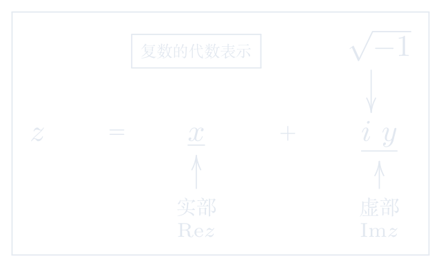
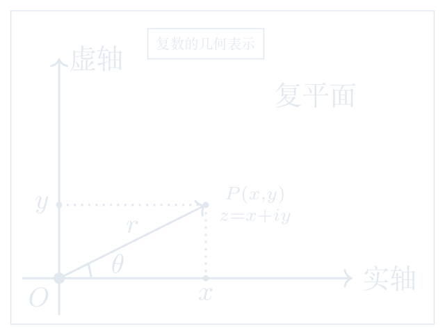

1.4 复数与数域
从实数坐标推广到复数，认识复平面与数域。
进度0%
掌握 0 / 2§1.4.1
复数
向量 / 复数与数域


-
模长: \(|z|:=|\overset{\longrightarrow}{OP}|=\sqrt{x^2+y^2}\);
-
辐角: 实轴沿逆时针方向旋转到\(\overset{\longrightarrow}{OP}\)的角度.
-
共轭: \(\overline{z}:=x-iy\).
-
三角表示:
\(z=r(\cos\theta+i\sin\theta)\).
这页感觉如何？
§1.4.2
数域
向量 / 复数与数域
复数域的任意子集称为数集. 例如: \(\mathbb N\), \(\mathbb Z\), \(\mathbb Q\), \(\mathbb R\),\(\mathbb C\), \(\cdots\).
注:\(\mathbb N\), \(\mathbb Z\)不为数域.
为什么需要数域概念?
-
向量的坐标可以是实数,也可以是复数;
-
统一的数域概念让我们可以同时处理实向量和复向量;
-
后面的线性空间理论建立在任意数域上.
注:
-
\(\mathbb Q[\sqrt{2}]=\{a+b\sqrt2\mid a,b\in\mathbb Q\}\)也是数域,但本课程不作要求.
-
\(\mathbb Q\) 为最小的数域. 即,若\(\mathbb F\)为数域,则\(\mathbb Q\subseteq \mathbb F\).
这页感觉如何？